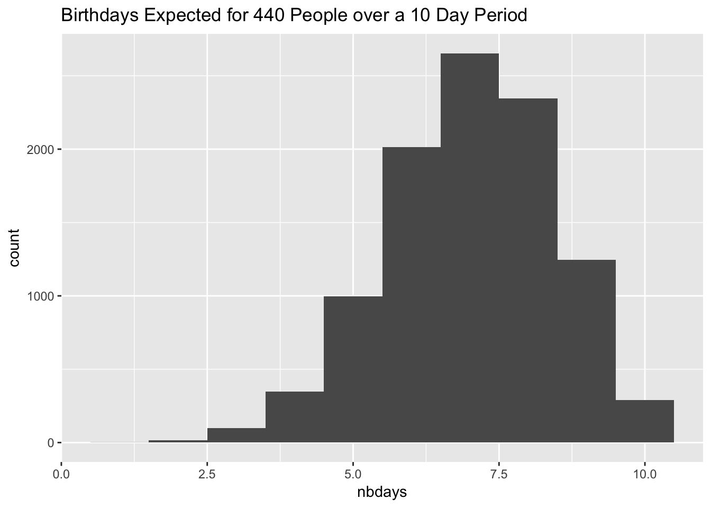
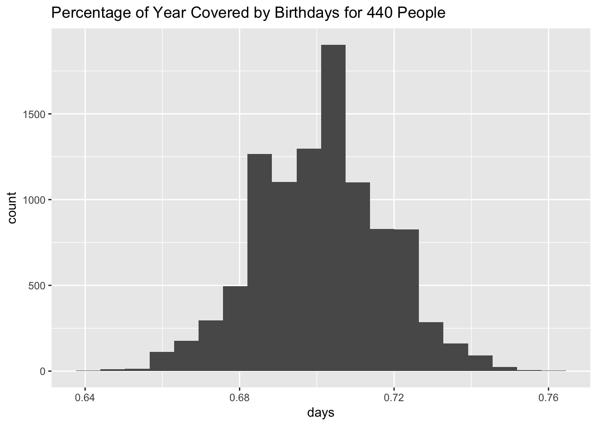

My family went on a cruise this month for 10 days, and in the dining room, it seemed that the waiters sang Happy Birthday to someone every night. The room was pretty full of people, but it struck me that some people might be lying to get the waiters to sing to them. This called for an analysis. What was the probability of a roomful of people having birthdays on each of 10 days in a row?
Now, there’s probably a math way to figure this out using probability theory, but it seems to be much more complicated than the traditional birthday probability problem. I decided to run a simulation.
The cruise held about 2650 people, with 3 dining rooms, and 2 seatings per night. I figured that meant there were about 440 people in my dining room (2650 divided by 3 divided by 2).
The dates of the cruise were from the end of July to early August, which I just estimated here to be the 220th to 229th days of the year.
Probability of Dining Room Having a Birthday Every Day
I first wrote a function to generate birthdays for the 440 people. It creates a vector of 440 random numbers between 1 and 365 (e.g., 1 is January 1 and 365 is December 31) then extracts just the ones that happen to fall between those dates (220 to 229).
library(ggplot2)
gen_rand_bdays <- function(sample_size = 440, firstday = 220, lastday = 229) {
rand_bdays <- sample(1:365, sample_size, replace = TRUE)
rand_bdays[which(rand_bdays >= firstday & rand_bdays <= lastday)]
}
gen_rand_bdays()## [1] 221 224 226 228 223 223 222 228 228I then wrote a function that checks to see if all the birthdays from 220 to 229 are represented in the random birthdays. One way to do this is to identify the unique values the list of random birthdays and see if the length is the desired number.
check_bdays <- function(rand_bdays, firstday = 220, lastday = 229) {
return(length(unique(rand_bdays)) == lastday - firstday + 1)
}
set.seed(1)
test1 <- gen_rand_bdays()
test1## [1] 221 220 225 221 221 227 229check_bdays(test1)## [1] FALSEFinally I ran the simulation 10000 times to see how many times a birthday should be celebrated 10 days in a row on a given cruise.
set.seed(1)
out <- NA
for(i in 1:10000) {
x <- gen_rand_bdays(sample_size = 440, firstday = 220, lastday = 229)
out[i] <- check_bdays(x, firstday = 220, lastday = 229)
}
mean(out)## [1] 0.029The result was 2.9% of the time. I thought there was a birthday every night, but it turns out that this is unlikely. Either I remembered wrong, or some people were not telling the truth. There’s also a possibility that some people choose a certain week to go on a cruise because it is their birthday. In addition I seem to recall that birthdays are not exactly evenly distributed around the calendar.
Distribution of the Estimated Number of Birthdays
The next question was to identify the variance of the estimate. I ran a 10000 simulations of 10 day cruises to find out the distribution of possible results.
set.seed(2)
nbdays <- NA
for(i in 1:10000) {
nbdays[i] <- length(unique(gen_rand_bdays()))
}The mean and standard deviation for the number of birthdays expected using this simulation were as follows. The expected number of birthdays over a 10 day period was 7 birthdays with a standard error of 1.4.
mean(nbdays)## [1] 7.0187sd(nbdays)## [1] 1.448365Here’s a histogram of the distribution.
ggplot(data.frame(nbdays), aes(x = nbdays)) +
geom_histogram(bins = 10) +
labs(title = "Birthdays Expected for 440 People over a 10 Day Period")
A related question is how many birthdays are observed in one year for this sample. That is, with a sample of 440 people, what fraction of the year is covered by birthdays?
year_bdays <- rep(NA, 10000)
set.seed(1)
year_bdays <- sapply(year_bdays, function(x) length(unique(sample(1:365, 440, replace = T))))
mean(year_bdays)/365## [1] 0.7010203sd(year_bdays)/365## [1] 0.01668154ggplot(data.frame(days = year_bdays/365), aes(x = days)) +
geom_histogram(bins = 20) +
labs(title = "Percentage of Year Covered by Birthdays for 440 People")
For this number of people, only about 70% of the year would be represented with birthdays.
Discussion
This is probably a good place to stop since this is getting pretty long. There are some other things we could look at like how many people do you need to have to have a 95% probability of there being a birthday on that day? Or how many people do you need to have to have a 95% probability that every birthday is covered? Maybe I’ll come back to this in another post.
Conclusion
Assuming a uniform random distribution of birthdays in the room, there was only a ~3% chance that my cruise dining room should have celebrated a birthday every day during the cruise.